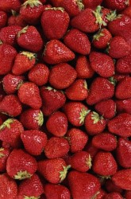

잎자루는 길고 비교적 큰 3개의 잎이 달리며 각각은 둥글고 가장자리가 톱니 모양이다. 봄에 몇 개의 꽃자루가 나와 몇 개에서 십수 개의 흰색 꽃이 달리는데 꽃잎이 다섯개이고 암술과 수술이 노란색이다. 씨방이 발달하여 과실이 되는 것이 아니라 꽃턱이 발달하여 육질화되며 과실은 표면에 깨와 같이 박히는 수과의 일종이다. 전체 모양은 공 모양, 달걀 모양 또는 타원형이고, 대개는 붉은색이지만 드물게 흰색 품종도 있다. [네이버 지식백과] 딸기 [strawberry] (두산백과) 자세히보기